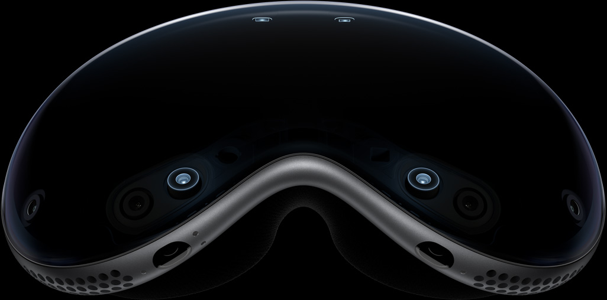
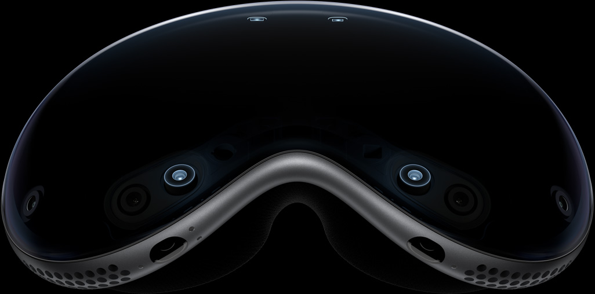

Introducing
Welcome to the era of spatial computing.
Apple Vision Pro seamlessly blends
digital content with your physical space.
Watch the film
Available early next year in the U.S.

App
Free your desktop.
And your apps will follow.
Your apps live in
your space.
With Apple Vision Pro, you have an infinite canvas that
transforms how you use the apps you love. Arrange apps
anywhere and scale them to the perfect size, making the
workspace of your dreams a reality — all while staying
present in the world around you. Browse the web in Safari,
create a to-do list in Notes, chat in Messages, and
seamlessly move between them with a glance.
Entertainment
The ultimate theater.
Wherever you are.
An immersive way to
experience
entertainment.
Apple Vision Pro can transform any room into your own
personal theater. Expand your movies, shows, and games up
to the perfect size while feeling like you’re part of the action
with Spatial Audio. And with more pixels than a 4K TV for
each eye, you can enjoy stunning content wherever you are
— whether that’s a long flight or the couch at home.
Design
Designed by Apple.
Apple Vision Pro is the result of decades of experience designing high‑performance, mobile, and wearable devices — culminating in the most ambitious product Apple has ever created. Apple Vision Pro integrates incredibly advanced technology into an elegant, compact form, resulting in an amazing experience every time you put it on.
Enclosure. A singular
piece of three-
dimensionally formed
laminated glass flows
into an aluminum alloy
frame that curves to wrap
around your face.
Light Seal. The Light Seal
gently flexes to conform
to your face, delivering a
precise fit while blocking
out stray light.
Head Band. The
Head Band provides
cushioning, breathability,
and stretch. The Fit Dial
lets you adjust
Apple Vision Pro
precisely to your head.
Power. The external
battery supports up to
2 hours of use, and
all‑day use when
plugged in.1
Sound. Speakers
positioned close to your
ears deliver rich
Spatial Audio while
keeping you aware of
your surroundings.
EyeSight. An outward
display reveals your eyes
while wearing
Apple Vision Pro, letting
others know when you
are using apps or fully
immersed.
A singular piece of three-dimensionally formed laminated glass
acts as an optical surface for the cameras and sensors that view
the world. It flows seamlessly into a custom aluminum alloy frame
that gently curves to wrap around your face while serving as an
attachment point for the Light Seal.

visionOS
Apple’s first spatial
operating system.
Interaction designed
for spatial computing.
Built on the foundation of macOS, iOS, and iPadOS, visionOS
enables powerful spatial experiences. Control
Apple Vision Pro with your eyes, hands, and voice —
interactions feel intuitive and magical. Simply look at an
element, tap your fingers together to select, and use the
virtual keyboard or dictation to type.


Apps leap into life.
In visionOS, apps can fill the space around you, beyond the
boundaries of a display. They can be moved anywhere,
scaled to the perfect size, react to the lighting in your room,
and even cast shadows.

Stay connected to
people around you.
Apple Vision Pro helps you remain connected to those
around you. EyeSight reveals your eyes and lets those
nearby know when you’re using apps or fully immersed in an
experience. When someone approaches, Apple Vision Pro
simultaneously lets you see the person and reveals your
eyes to them.
Technology
Innovation you can
see, hear, and feel.
Pushing boundaries from the inside out. Spatial experiences on
Apple Vision Pro are only possible through groundbreaking Apple
technology. Displays the size of a postage stamp that deliver more pixels
than a 4K TV to each eye. Incredible advances in Spatial Audio. A
revolutionary dual‑chip design featuring custom Apple silicon. A
sophisticated array of cameras and sensors. All the elements work together
to create an unprecedented experience you have to see to believe.
More pixels than a 4K TV. For each eye.
The custom micro‑OLED display system features 23 million pixels,
delivering stunning resolution and colors. And a specially designed
three‑element lens creates the feeling of a display that’s everywhere
you look.
Our most advanced
Spatial Audio system ever.
Dual-driver audio pods positioned next to
each ear deliver personalized sound while
letting you hear what’s around you.
Spatial Audio makes sounds feel like
they’re coming from your surroundings.
Audio ray tracing analyzes your room’s
acoustic properties to adapt and match
sound to your space. And if you want to use
headphones with Apple Vision Pro, the new
AirPods Pro (2nd generation) offer the
perfect experience, featuring Lossless
Audio with ultra-low latency enabled by the
H2 chip in both devices.


 


Replay
A sophisticated sensor array.
A pair of high-resolution cameras transmit over one billion pixels per
second to the displays so you can see the world around you clearly.
The system also helps deliver precise head and hand tracking and
real‑time 3D mapping, all while understanding your hand gestures
from a wide range of positions.

Revolutionary dual‑chip
performance.
A unique dual‑chip design enables the spatial experiences on
Apple Vision Pro. The powerful M2 chip simultaneously runs
visionOS, executes advanced computer vision algorithms, and
delivers stunning graphics, all with incredible efficiency. And the
brand-new R1 chip is specifically dedicated to process input from the
cameras, sensors, and microphones, streaming images to the
displays within 12 milliseconds — for a virtually lag-free, real-time
view of the world.
Privacy and Security
When it comes to privacy,
we don’t blink.
Privacy and security built in. Like every Apple product and service,
Apple Vision Pro was designed to help protect your privacy and keep
you in control of your data. It builds on the foundation of existing
Apple privacy and security features with new technologies like
Optic ID, a secure authentication system that uses the uniqueness of
your iris.

Use AR to view
Apple Vision Pro.
Open this page using Safari on
your iPhone or iPad.